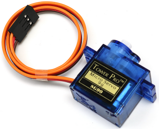

Note
Bonjour et bienvenue dans la communauté Facebook des passionnés de SunFounder Raspberry Pi, Arduino et ESP32 ! Plongez dans l’univers du Raspberry Pi, de l’Arduino et de l’ESP32 avec d’autres passionnés.
Pourquoi nous rejoindre ?
Support d’experts : Résolvez les problèmes après-vente et les défis techniques avec l’aide de notre communauté et de notre équipe.
Apprenez & Partagez : Échangez des astuces et des tutoriels pour améliorer vos compétences.
Aperçus exclusifs : Accédez en avant-première aux annonces de nouveaux produits et aux aperçus exclusifs.
Réductions spéciales : Profitez de réductions exclusives sur nos derniers produits.
Promotions festives et cadeaux : Participez à des tirages au sort et à des promotions spéciales pendant les fêtes.
👉 Prêt à explorer et à créer avec nous ? Cliquez sur [Ici] et rejoignez-nous dès aujourd’hui !
1.3.2 Servo
Introduction
Dans cette leçon, nous allons apprendre à faire tourner un servomoteur.
Composants

Principe
Servomoteur
Un servomoteur est généralement composé des éléments suivants : boîtier, arbre, système d’engrenage, potentiomètre, moteur à courant continu, et carte embarquée.
Voici comment cela fonctionne : le microcontrôleur envoie des signaux PWM au servomoteur, puis la carte embarquée dans le servo reçoit ces signaux via la broche de signal et contrôle le moteur interne pour tourner. En conséquence, le moteur actionne le système d’engrenage qui entraîne ensuite l’arbre après réduction. L’arbre et le potentiomètre du servo sont reliés ensemble. Lorsque l’arbre tourne, il entraîne le potentiomètre, qui envoie alors un signal de tension à la carte embarquée. Ensuite, la carte détermine la direction et la vitesse de rotation en fonction de la position actuelle, ce qui permet de s’arrêter précisément à la position définie et de s’y maintenir.

L’angle est déterminé par la durée de l’impulsion appliquée au fil de contrôle. Cela s’appelle la modulation de largeur d’impulsion (PWM). Le servo s’attend à recevoir une impulsion toutes les 20 ms. La longueur de l’impulsion détermine l’angle de rotation du moteur. Par exemple, une impulsion de 1,5 ms positionnera le moteur à 90 degrés (position neutre).
Lorsque l’impulsion envoyée est inférieure à 1,5 ms, le servo tourne à une position située à quelques degrés dans le sens antihoraire par rapport au point neutre. Si l’impulsion est supérieure à 1,5 ms, le phénomène inverse se produit. La largeur minimale et maximale de l’impulsion qui commande la rotation du servo dépendent de chaque servo. En général, l’impulsion minimale est d’environ 0,5 ms et l’impulsion maximale est de 2,5 ms.

Schéma de câblage

Procédures expérimentales
Étape 1 : Construire le circuit.

Pour les utilisateurs de langage C
Étape 2 : Accédez au dossier du code.
cd ~/davinci-kit-for-raspberry-pi/c/1.3.2
Étape 3 : Compiler le code.
gcc 1.3.2_Servo.c -lwiringPi
Étape 4 : Exécuter le fichier exécutable.
sudo ./a.out
Après l’exécution du programme, le servomoteur tournera de 0 degrés à 180 degrés, puis de 180 degrés à 0 degrés, en boucle.
Note
Si cela ne fonctionne pas après l’exécution ou si vous recevez un message d’erreur : "wiringPi.h : Fichier ou répertoire introuvable", veuillez vous référer à C code is not working?.
Code
#include <wiringPi.h>
#include <softPwm.h>
#include <stdio.h>
#define ServoPin 1 // définir le servo sur GPIO1
long Map(long value,long fromLow,long fromHigh,long toLow,long toHigh){
return (toHigh-toLow)*(value-fromLow) / (fromHigh-fromLow) + toLow;
}
void setAngle(int pin, int angle){ // Créer une fonction pour contrôler l'angle du servo.
if(angle < 0)
angle = 0;
if(angle > 180)
angle = 180;
softPwmWrite(pin,Map(angle, 0, 180, 5, 25));
}
int main(void)
{
int i;
if(wiringPiSetup() == -1){ // lorsque l'initialisation de wiring échoue, afficher un message à l'écran
printf("setup wiringPi failed !");
return 1;
}
softPwmCreate(ServoPin, 0, 200); // initialiser la broche PMW du servo
while(1){
for(i=0;i<181;i++){ // Faire tourner le servo de 0 à 180. setAngle(ServoPin,i);
delay(2);
}
delay(1000);
for(i=181;i>-1;i--){ // Faire tourner le servo de 180 à 0. setAngle(ServoPin,i);
delay(2);
}
delay(1000);
}
return 0;
}
Explication du code
long Map(long value,long fromLow,long fromHigh,long toLow,long toHigh){
return (toHigh-toLow)*(value-fromLow) / (fromHigh-fromLow) + toLow;
}
Création d’une fonction Map() pour mapper une valeur dans le code suivant.
void setAngle(int pin, int angle){ // Créer une fonction pour contrôler l'angle du servo.
if(angle < 0)
angle = 0;
if(angle > 180)
angle = 180;
softPwmWrite(pin,Map(angle, 0, 180, 5, 25));
}
Création de la fonction setAngle() pour écrire un angle sur le servo.
softPwmWrite(pin,Map(angle,0,180,5,25));
Cette fonction permet de modifier le cycle de service du PWM.
Pour faire tourner le servo de 0 à 180°, la largeur d’impulsion doit varier dans une plage de 0,5 ms à 2,5 ms avec une période de 20 ms ; dans la fonction softPwmCreate(), nous avons défini que la période est de 200x100us=20ms, donc nous devons mapper 0~180 à 5x100us ~ 25x100us.
Le prototype de cette fonction est présenté ci-dessous.
int softPwmCreate（int pin，int initialValue，int pwmRange）;
Paramètre pin : N’importe quelle broche GPIO du Raspberry Pi peut être définie comme broche PWM.
Paramètre initialValue : La largeur d’impulsion initiale est initialValue multiplié par 100us.
Paramètre pwmRange : La période du PWM est pwmRange multiplié par 100us.
Pour les utilisateurs de Python
Étape 2 : Accédez au dossier du code.
cd ~/davinci-kit-for-raspberry-pi/python/
Étape 3 : Exécutez le fichier exécutable.
sudo python3 1.3.2_Servo.py
Après l’exécution du programme, le servomoteur tournera de 0 à 180 degrés, puis de 180 à 0 degrés, en boucle.
Code
Note
Vous pouvez Modifier/Réinitialiser/Copier/Exécuter/Arrêter le code ci-dessous. Mais avant cela, vous devez aller dans le chemin du code source comme davinci-kit-for-raspberry-pi/python.
import RPi.GPIO as GPIO
import time
SERVO_MIN_PULSE = 500
SERVO_MAX_PULSE = 2500
ServoPin = 18
def map(value, inMin, inMax, outMin, outMax):
return (outMax - outMin) * (value - inMin) / (inMax - inMin) + outMin
def setup():
global p
GPIO.setmode(GPIO.BCM) # Numérotation des GPIO par BCM
GPIO.setup(ServoPin, GPIO.OUT) # Configurer le mode de ServoPin en sortie
GPIO.output(ServoPin, GPIO.LOW) # Mettre ServoPin à bas
p = GPIO.PWM(ServoPin, 50) # Configurer la fréquence à 50Hz
p.start(0) # Cycle de service = 0
def setAngle(angle): # Faire tourner le servo à un angle spécifique (0-180 degrés)
angle = max(0, min(180, angle))
pulse_width = map(angle, 0, 180, SERVO_MIN_PULSE, SERVO_MAX_PULSE)
pwm = map(pulse_width, 0, 20000, 0, 100)
p.ChangeDutyCycle(pwm) # Mapper l'angle au cycle de service et le sortir
def loop():
while True:
for i in range(0, 181, 5): # Faire tourner le servo de 0 à 180 degrés
setAngle(i) # Écrire l'angle dans le servo
time.sleep(0.002)
time.sleep(1)
for i in range(180, -1, -5): # Faire tourner le servo de 180 à 0 degrés
setAngle(i)
time.sleep(0.001)
time.sleep(1)
def destroy():
p.stop()
GPIO.cleanup()
if __name__ == '__main__': # Programme commence ici
setup()
try:
loop()
except KeyboardInterrupt: # Lorsque 'Ctrl+C' est pressé, la fonction destroy() sera exécutée.
destroy()
Explication du code
p = GPIO.PWM(ServoPin, 50) # Configurer la fréquence à 50Hz
p.start(0) # Cycle de service = 0
Configurer le ServoPin en tant que broche PWM, puis la fréquence à 50hz, avec une période de 20ms.
p.start(0) : Lancer la fonction PWM et définir la valeur initiale à 0.
def setAngle(angle): # Faire tourner le servo à un angle spécifique (0-180 degrés)
angle = max(0, min(180, angle))
pulse_width = map(angle, 0, 180, SERVO_MIN_PULSE, SERVO_MAX_PULSE)
pwm = map(pulse_width, 0, 20000, 0, 100)
p.ChangeDutyCycle(pwm) # Mapper l'angle au cycle de service et le sortir
Créer une fonction setAngle() pour écrire un angle allant de 0 à 180 degrés dans le servo.
angle = max(0, min(180, angle))
Ce code limite l’angle dans la plage de 0 à 180°.
La fonction min() retourne la plus petite des valeurs d’entrée. Si angle > 180, la fonction retourne 180, sinon elle retourne angle.
La méthode max() retourne le maximum entre plusieurs paramètres. Si angle < 0, la fonction retourne 0, sinon elle retourne angle.
pulse_width = map(angle, 0, 180, SERVO_MIN_PULSE, SERVO_MAX_PULSE)
pwm = map(pulse_width, 0, 20000, 0, 100)
p.ChangeDutyCycle(pwm)
Pour rendre la plage de 0 à 180° au servo, la largeur d’impulsion du servo est configurée entre 0,5ms (500us) et 2,5ms (2500us).
La période du PWM est de 20ms (20000us), donc le cycle de service du PWM est de (500/20000)% à (2500/20000)%, et la plage de 0 à 180 est mappée de 2,5 à 12,5.
Image du phénomène